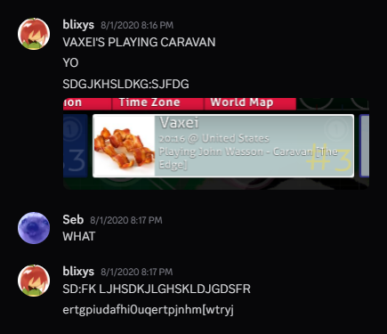

John Wasson - Caravan
Mapped circa August 2020
truthfully, i don’t have a lot to say about the map itself. it’s fine, it’s amateur, and indicative of mapping inexperience. i’m still barring it from the loved category.
but because this is still my longest map, it does have a history that i do want to talk about!
i’ve known about this song longer than i’ve known about mapping. when i was younger, someone showed me the ending scene of Whiplash on their phone, and my impressionable self was of course blown away by the song. come time 2018-19, and in the back of my head the idea of an incredibly difficult map with that solo became quite attractive to me. infact, that was (keyword here being “was”) one of my earliest mapping goals--making a really difficult map that would challenge top players! fast forward to lockdown, and i as well as many others had not much to do. even through online studies, i had found myself swimming in free time. by then i had already cultivated a bit of a friend group in osu!--namely Vulkin and gwb--so i decided to spend my free time mapping Caravan, biting off more than i could chew. in hindsight, a total mistake considering i was still a relatively new mapper at the time.
the mapping part isn’t that interesting as it’s mostly copypasting of the same sliders at the same ten degree angles, however i did form a ton of weird habits in the process! for example, if i were to use any sort of curved slider in the map, i would only use one with anchors that form a 60 or 30 degree angle. this made it easier to blanket patterns and create hexgrid… can you tell i used to be influenced by Monstrata? nonetheless, after beginning in May of 2020, i had essentially finished the map by August after remapping a few times and getting advice from people like Roxas and squirrelpascals.
and then…

despite putting me in grave danger of becoming a one-hit wonder, i am still quite grateful that Vaxei played this! in hindsight it’s easy to see why; Caravan is a relatively popular song set in the climax of a grueling movie, and until jfiu mapped it no one had a timed and finished map of it outside of my own. that uniqueness also propelled it outside of the player space, and because of that i began to talk to mappers i had really admired like Scub and squirrelpascals, which led me to wafer, to bouge place, to now... quite the domino effect, right?
(shoutouts to Roxas for coming up with the drumroll idea and shoutouts to Evening for timing certain parts)